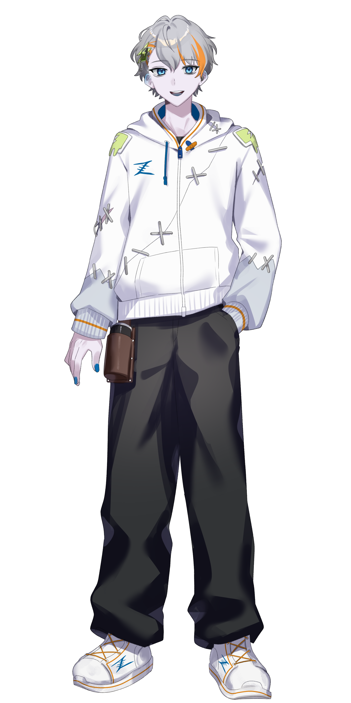
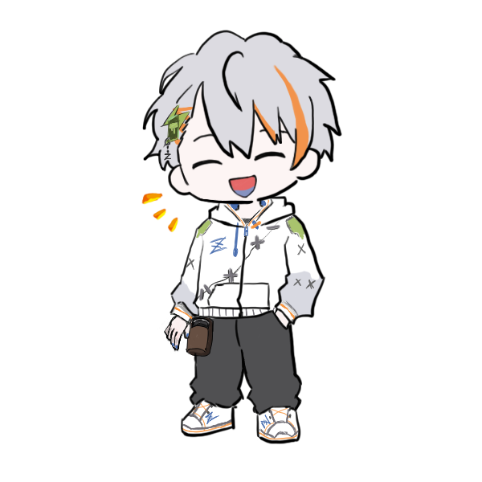

VIRTUAL LIVER / CREATOR
眠らない夜に、終わらない物語を。
深夜活動型ゾンビVライバー・遅電ゾマ。
雑談、怪談、昆虫食。夜の片隅から活動中。

NEVER ENDS

WHO IS ZOMA?
夜更かしに
付き添う、
アンデッド。
遅電ゾマ — 深夜活動型のゾンビ系Vライバー
怪談やゲーム配信、何気ない日常の雑談まで。 夜にふらりと現れ、あなたの夜更かしに付き添います。
この毎日に少しだけの永遠を。 深夜活動は終わらない。
DISCOVER THE PROFILE ↗* 事務所からクビはあります。
IDENTITY / 001
遅電 ゾマ
CHIDEN ZOMA
ポジティブ系アンデッド。深夜徘徊とゲーム、 エナジードリンクを愛するゾンビ。 朝でも夜でも、挨拶は「おはゾマ〜」。
- TYPE
- ゾンビ系Vライバー
- HEIGHT
- 173 cm
- ACTIVITY
- 雑談 / 怪談 / 都市伝説 / GAME
- BASE
- 深夜、ときどき早朝
WHERE TO FIND ME
STAY
CONNECTED.
配信も、動画も、日々のつぶやきも。
各プラットフォームで活動中。
04 / VISUAL ARCHIVE
THE WORLD
OF ZOMA.
ビジュアル、イラスト、制作物。
ゾマを形づくるクリエイティブをアーカイブ。
BUSINESS / COLLABORATION
HAVE A
GOOD NIGHT.
お仕事・案件・コラボのご相談は、 XのDMよりご連絡ください。
CONTACT VIA X ↗※ DMは事務所管理です。 内容により返信までお時間をいただく場合があります。
TOOLS FOR STREAMING
STREAM
SUPPORT.
配信企画をサポートする、
遅電ゾマ専用のライブツール。
配信への入室人数をカウント。
全国47都道府県からの回答を記録。
JAPAN MAP / LOADING
配信に来てくれた人の星座を記録。
硬貨の出目回数と合計金額を計算。